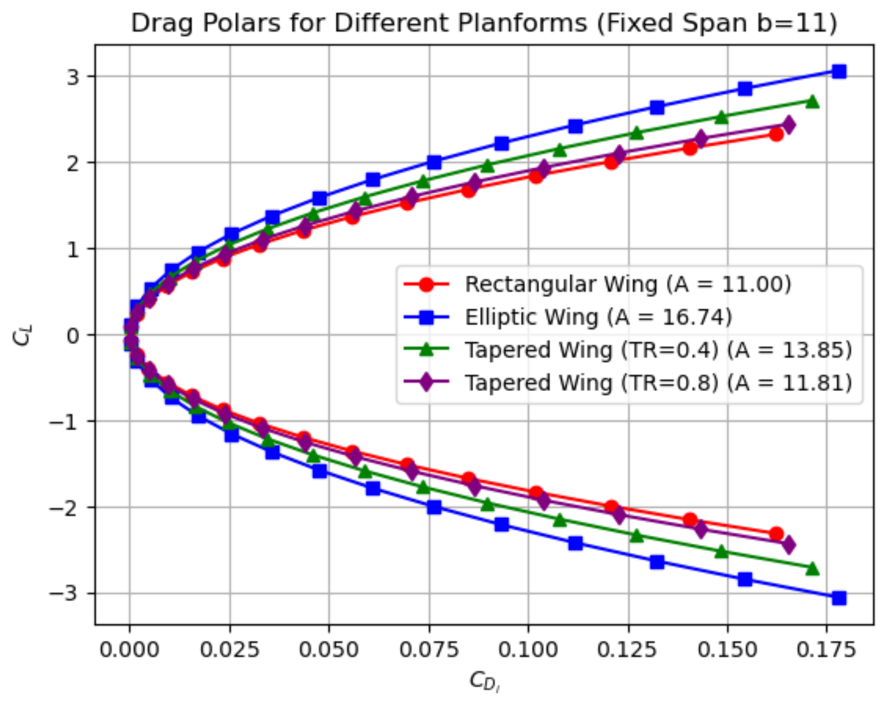
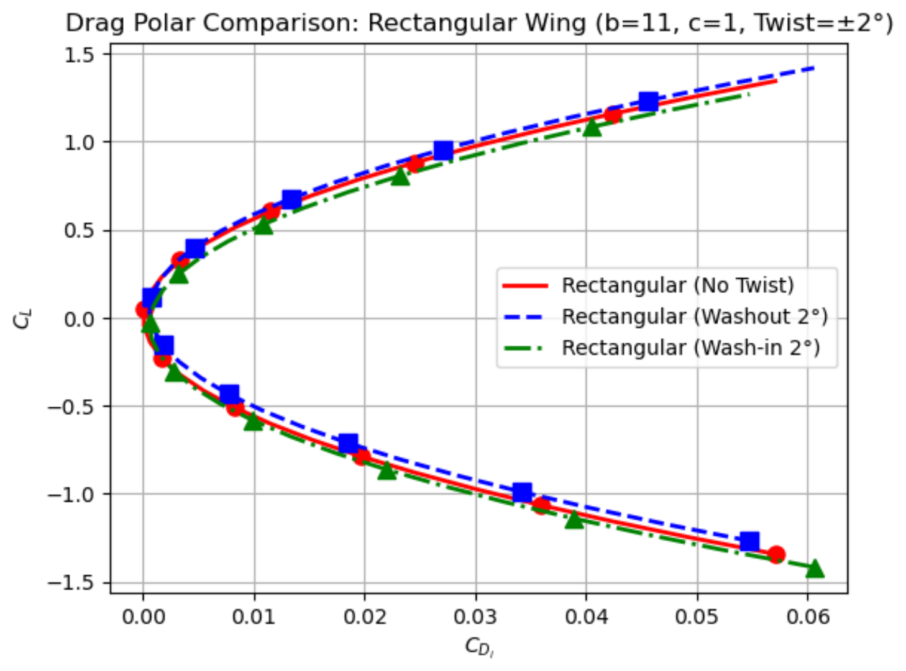

10 / Aerodynamic design trades / Preliminary design study
AE311 · Team lead · Three-person team
Selecting a tapered wing using lifting-line design trades
Our hypothetical recreational aircraft needed an efficient wing that could fit within a 12 m span limit and avoid the manufacturing difficulty of an elliptical planform. I led the three-person team that connected those constraints to a lifting-line trade study. Comparing planform, aspect ratio, and twist led to a preliminary recommendation for an 11 m tapered wing.
- My contribution
- Team coordination, investigation scope, plot digitization, and technical documentation
- Tools
- Team leadership · Lifting-line theory · Python / Jupyter · Design trades
- Outcome
- Recommended 11 m span, 0.4 taper ratio, and no geometric twist

Balance aerodynamic benefit with a buildable shape
The scenario imposed a maximum 12 m wingspan and a budget that excluded elliptical-wing manufacture. The task was therefore to compare simpler planforms and identify geometry that approached the aerodynamic reference while remaining compatible with those constraints.
I coordinated the investigation’s scope, schedule, and division of work. Benjamin McDonald developed the computational model as technical lead, while Jackson Rees led the real-world research. I supported plot digitization, mathematical and reference formatting, report preparation, and discussions connecting the two investigations.
Use comparisons to support each design choice
The team used Prandtl lifting-line theory with Fourier-series circulation to calculate lift, induced drag, and span efficiency. The ideal elliptical case supplied a useful check: its reported span efficiency was 1.0 and its higher Fourier coefficients were effectively zero.
The study then swept aspect ratio, compared elliptical, rectangular, and two tapered planforms at 11 m span, and tested ±2° twist on a rectangular wing. The fixed-span comparison represented feasible configurations; because their areas and aspect ratios also differed, it did not isolate planform shape as the only cause of the performance differences.


Keep the investigation focused enough to finish
The team’s ambitions initially extended beyond the time available near the end of the semester. The report identifies scope control as a practical obstacle: core objectives had to take priority over supplemental investigation.
My role shifted from guiding topic selection to reducing the team’s documentation and analysis-support workload, allowing the technical and research leads to concentrate on their investigations. The completed report joined the physical explanation, numerical comparisons, and manufacturing constraints into one design recommendation.
Make a recommendation with explicit assumptions
11 m span, 1 m root chord, 0.4 m tip chord, and no geometric twist.
The report favored a high aspect ratio and 0.4 taper ratio to approach the elliptical reference’s induced-drag performance with simpler manufacture. Choosing 11 m left clearance within the 12 m span limit. The small modeled benefit of washout was judged insufficient to justify its added manufacturing difficulty.
The no-twist recommendation assumes that the rectangular-wing trend carries over to the proposed tapered wing. It is a preliminary aerodynamic choice: structural sizing, viscous effects, stall, and whole-aircraft behavior were outside the small-angle, attached-flow model. My contribution provides evidence of technical coordination and synthesis—turning a team’s research and numerical results into a clear, bounded design decision.